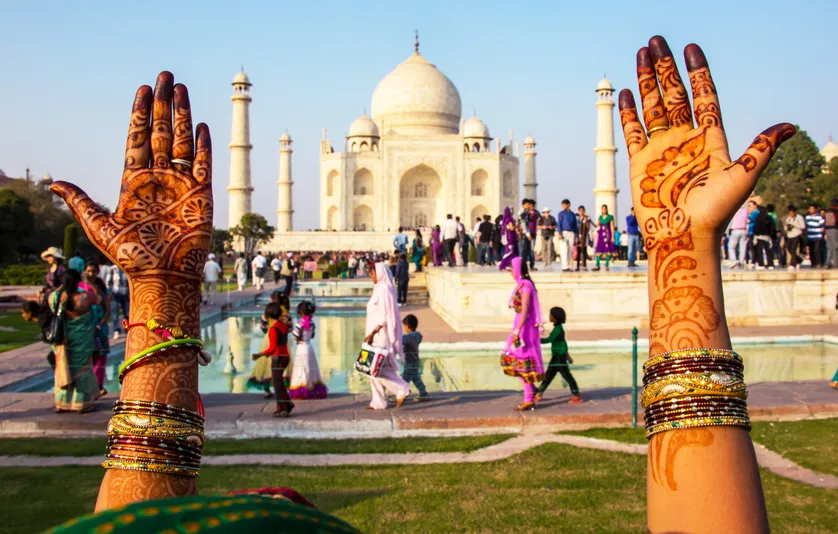
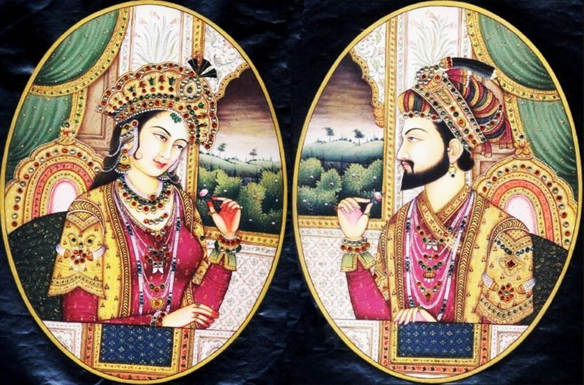

Le Taj Mahal ( qui signifie « la couronne du palais » — mais ce nom peut aussi être vu comme une corruption de Mumtaz Mahal1) est situé à Agra, au bord de la rivière Yamuna, dans l'État de l'Uttar Pradesh, en Inde2. C'est un mausolée de marbre blanc construit par l'empereur moghol musulman Shâh Jahân en mémoire de son épouse Arjumand Bânu Begam3, aussi connue sous le nom de Mumtaz Mahal, qui signifie en persan « lumière du palais ». Celle-ci meurt le 17 juin 1631 en donnant naissance à leur quatorzième enfant, alors qu'elle accompagnait son mari pendant une campagne militaire. Elle trouve une première sépulture sur place dans le jardin Zainabad à Burhanpur. La construction du mausolée commence en 1631 et s'achève dans sa plus grande partie en 16484. Son époux, mort le 31 janvier 1666, est inhumé auprès d'elle. Le Taj Mahal est considéré comme un joyau de l'architecture moghole, un style qui combine des éléments architecturaux des architectures islamique, iranienne, ottomane et indienne5,6. Il est considéré que l'architecte principal fut Ustad Ahmad Lahauri7,8 de Lahorek 1. Visité par plus de 6 millions de touristes en 2019, c'était le site le plus touristique d'Inde et un des dix monuments les plus visités au monde (en).
Le Taj Mahal, image de l'Inde s'il en est, ne rime pas qu'avec amour
L'origine des mondes culturels |Emblème de l'Inde, le Taj Mahal attire des couples du monde entier pour sa beauté et son histoire. Une merveille de marbre blanc née en 1631 d'un chagrin d'amour. Mais sa construction par un empereur moghol lui vaut aussi la haine de nationalistes hindous et les critiques de militantes féministes.
 Joyau de l'art musulman en Inde, le grandiose mausolée du Taj Mahal suscite l'admiration de plus de 6 millions de visiteurs chaque année. Victime du tourisme de masse et de la pollution, son accès a dû être restreint. Près d'Agra, dans l'Etat de l'Uttar Pradesh, à 200 km au sud de New Delhi, l'imposant monument de marbre blanc incrusté de pierres précieuses apparaît comme le décor rêvé pour consacrer une histoire d'amour. En écho à la volonté de son constructeur, l'empereur Shâh Jahân : honorer la mémoire de sa troisième épouse, sa favorite, Mumtâz Mahal.Mais ce temple de l'amour, inscrit au patrimoine mondial de l'humanité, a aussi déclenché les foudres ces dernières années de nationalistes hindous et de féministes indiens. Ils y voient avant tout le symbole d'une domination musulmane et d'une histoire très loin d'être romantique. Sans parler de la marque d'autorité suprême de celui dont le nom signifie "roi du monde", son hypothétique volonté despotique, et, qui sait, la folie des grandeurs d'un esthète, très peu de temps avant le Versailles de Louis XIV.
La maggie de cet endroit,visité par des millions de couples relève du fait qu'il referme une histoire qui regroupe les deux sentiments les plus forts au monde: l'amour et la haine.